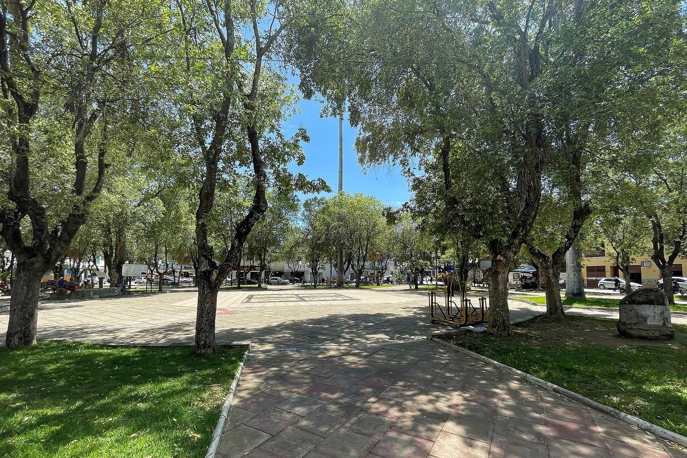

Pontos que faltam
Os votos declarados a algum candidato somam 82 pontos. Flávio tem 31 deles, 37,80%. Para passar de metade dos votos válidos ele precisa de mais dez pontos. Página 16.
Quaest / Globo · 14 de agosto de 2026
A imprensa leu esta pesquisa como empate técnico no segundo turno. É verdade e é pouco. Dentro do mesmo relatório está a conta do primeiro turno: Flávio Bolsonaro precisa de dez pontos de voto válido para passar de metade, e os doze pontos da terceira via estão concentrados exatamente nos recortes em que ele já lidera. O próprio instituto mede que esse voto é infiel. O obstáculo real não é rejeição nem mensagem: é que quase ninguém acha que ele ganha.
01 · veredito
A rodada melhora o segundo turno, fortalece o voto útil e mostra uma base mais firme. A leitura que a imprensa não fez é outra: existe um caminho aritmético para decidir a eleição em turno único, ele é estreito, e ele não depende de convencer eleitor de Lula. Os números abaixo distinguem fato publicado, conta reproduzível e inferência estratégica.
Os votos declarados a algum candidato somam 82 pontos. Flávio tem 31 deles, 37,80%. Para passar de metade dos votos válidos ele precisa de mais dez pontos. Página 16.
Quem mediu foi o instituto. Caiado tem 45% de voto mutável, Renan Santos 43%, Flávio 30% e Lula 22%. Série de cinco ondas na página 28.
Quatro em cada cinco pontos da terceira via estão nas faixas de renda em que Flávio lidera ou empata o primeiro turno. Por região, 59,9% estão no Sudeste e no Sul. Páginas 17 e 21.
A expectativa de vitória de Lula está 18 pontos acima do voto dele. A de Flávio está 4 pontos abaixo. Em todos os recortes publicados de região e renda o sinal se repete. Páginas 91, 92 e 96.
No primeiro turno, Lula tem 38 e Flávio 31, com 12 pontos de terceira via e 18 de indecisão e branco. No segundo, Lula tem 43 e Flávio 40, com 13 de branco e nulo e 4 de indecisão.
Páginas 16 e 30. A vantagem de sete pontos do primeiro turno resiste à incerteza amostral; a de três pontos do segundo, não.
02 · matemática
A margem de ±2 divulgada vale para uma proporção isolada sob amostragem aleatória simples. A diferença entre dois candidatos tem outra variância. Sem pesos finais, identificação de conglomerado e efeito de desenho, a aproximação simples é o melhor cenário para a precisão.
Para o intervalo da diferença de 7 incluir zero, o efeito de desenho teria de chegar a 3,73. Com seis entrevistas por setor, a correlação intraclasse equivalente seria 0,546. É alta.
A diferença já inclui zero com deff igual a 1. O desenho real só pode ampliar a incerteza, salvo ganhos específicos de estratificação que o relatório não quantifica.
Lula foi de 39 para 38 e Flávio de 30 para 31 no primeiro turno. A mudança de um ponto por candidato cabe no ruído amostral. A direção ajuda a hipótese, mas não a prova.
O relatório é composto por imagens. Recompusemos o primeiro turno pelo cruzamento independente de posicionamento político, página 24: Lula chega a 37,4 e Flávio a 31,09, contra 38 e 31 publicados. O resíduo é compatível com arredondamento e com os 2% sem posição declarada.
03 · o mapa
Nenhuma das sete manchetes que levantamos disse isso. O primeiro turno aberto por região e por renda mostra um país partido em dois, e mostra que o lado onde Flávio já ganha é também onde sobra voto para capturar.
Flávio lidera o Sul por 15 pontos e o Sudeste por 3. Lula lidera o Nordeste por 34 e o bloco de Norte com Centro-Oeste por 10.

No Sul, Flávio tem 40 e Lula 25, com 12 pontos de terceira via e 22 de indecisão e branco. No Sudeste, Flávio 35 e Lula 32, com 13 e 19. Acima de cinco salários, Flávio 36 e Lula 31, com 16 e 16. De dois a cinco salários, Lula 34 e Flávio 33, com 12 e 20. No Centro-Oeste e Norte, Lula 36 e Flávio 26, com 17 e 19. Até dois salários, Lula 52 e Flávio 23, com 7 e 17. No Nordeste, Lula 57 e Flávio 23, com 7 e 13.
Páginas 17 e 21. Terceira via soma Renan Santos, Ronaldo Caiado, Augusto Cury e Romeu Zema. Samara Martins fica fora por ser candidatura de esquerda. O número à direita é a margem de Flávio contra Lula no recorte.
Sudeste, 35 a 32, e Sul, 40 a 25. Juntas, elas são 56% da amostra. A margem regional de erro é de 3 e 6 pontos, então o Sudeste é empate e o Sul é vantagem clara.
De dois a cinco salários mínimos, 42% da amostra, o primeiro turno está 34 a 33. É o maior bloco de renda e o mais equilibrado do relatório.
57 a 23, e a terceira via ali vale só 7 pontos. Não há voto útil a pedir onde não existe terceiro. A conversão no Nordeste depende de outra coisa, não de consolidação.
A distribuição não faz de Flávio favorito. Lula lidera o país por 7 pontos e vence os dois recortes de maior peso popular. O que a abertura mostra é onde a disputa é elástica: nos recortes em que Flávio já lidera, o estoque de voto não decidido chega a 34 pontos no Sul e 32 no Sudeste.
04 · terceira via
A regra da casa manda procurar a medição antes de estimar. Ela existe. A Quaest pergunta em toda onda se a escolha é definitiva ou ainda pode mudar, e publica a série por candidato na página 28. O resultado desmonta a ideia de que a terceira via é um bloco.
Romeu Zema tem 77% de voto mutável, com a série 65, 74, 70, 79 e 77. Ronaldo Caiado, 45%, com 65, 52, 57, 47 e 45. Renan Santos, 43%, com 60, 63, 65, 45 e 43. Flávio Bolsonaro, 30%, com 34, 30, 37, 32 e 30. Lula, 22%, com 29, 29, 23, 22 e 22.
Página 28, ondas de maio, junho e julho de 2026, mais 5 e 14 de agosto. Margem de erro declarada pelo instituto: 3 pontos para Lula, 4 para Flávio, 12 para Caiado e Renan, 16 para Zema.
Aplicando a taxa medida aos pontos de cada candidato, a terceira via carrega cerca de 6 pontos que o próprio eleitor declarou disponíveis.
Os candidatos pequenos têm margem enorme. O que sobrevive à incerteza é a direção, repetida em cinco ondas seguidas, não o nível exato.
30% de 31 pontos. Ele tem mais voto solto do que toda a terceira via somada. Antes de atacar, precisa defender.
É a menor taxa da tabela e caiu de 29% em maio. A base do incumbente endureceu enquanto a oposição se organizava.
Terceira via não é um partido, é um estacionamento. Entre os independentes, mais da metade nem conhece esses nomes: 56% não conhecem Caiado, 59% não conhecem Zema e 79% não conhecem Renan Santos, página 79. Quem escolhe um nome que não conhece está adiando a decisão, não tomando uma.
05 · turno único
Vencer no primeiro turno exige mais da metade dos votos válidos, que são os votos dados a algum candidato, sem branco e sem nulo. Aqui eles somam 82 pontos. Flávio tem 31, ou 37,80%. Lula tem 38, ou 46,34%. A distância até a metade é exatamente dez pontos.
Capturando 25% da terceira via, faltam 7 pontos. Com 50%, faltam 4. Com 75%, falta 1. Com 83,3%, a conta fecha. A rota que passa só pelos indecisos exigiria 20 pontos de um bloco que tem 18, e por isso é impossível sozinha.
Barra azul: pontos capturados. Barra hachurada: pontos que ainda faltam. Aritmética condicional sobre a página 16, não previsão de resultado.
Sem tirar um voto de Lula, Flávio precisa de 10 dos 12 pontos, isto é, 83,3% do bloco. É o cenário mais exigente e o mais limpo de premissas.
Capturando os 6,07 pontos declarados mutáveis, sobram 3,93. Eles saem de 7,86 pontos recrutados no bloco de 18, ou 43,6% dele. É a rota realista.
Cada ponto tirado de Lula vale um ponto cheio, porque muda os dois lados da diferença. Também é o mais caro: 77% do voto de Lula é declarado definitivo.
Entre os muito interessados, 36% da amostra, Lula tem 47 e Flávio 37, com 10 de terceira via e 6 sem escolha. Entre os pouco interessados, 42%, Lula 38 e Flávio 29, com 12 e 20. Entre os nada interessados, 21%, Lula 26 e Flávio 24, com 13 e 35.
Páginas 25 e 101. Contraponto obrigatório: a vantagem de Lula não encolhe quando o interesse sobe, ela cresce. O que cresce quando o interesse cai é o estoque de gente sem escolha, de 6 para 35 pontos.
| Eleição | Terceira via | Dois líderes | Se repetisse aqui | Basta? |
|---|---|---|---|---|
| 2018, 1º turno | 18,23% | 75,72% | menos concentração que hoje | não |
| 2022, 1º turno | 7,20% | 91,63% | espreme 6,14 pontos | não |
| Quaest 14/08/2026 | 14,63% | 84,15% | faltam 10,00 pontos | situação atual |
Em 2022 os dois líderes ficaram com 91,63% dos votos válidos, a maior concentração recente, com Tebet em 4,16% e Ciro em 3,04%. Repetir isso aqui espreme 6,14 pontos. Mesmo que todos os 6,14 fossem para Flávio, não bastam para os dez que faltam. A consolidação normal do voto útil brasileiro não entrega turno único. É preciso consolidação acima do padrão de 2022 e assimétrica a favor dele.
06 · inevitabilidade
Voto útil é um pedido para abandonar o preferido e votar em quem pode ganhar. Ele só funciona se o eleitor acreditar que quem pede pode ganhar. Esta é a medida disso: expectativa de vitória menos intenção de voto, dentro do mesmo recorte. Chamamos de prêmio de inevitabilidade.
Páginas 91, 92, 96, 17 e 21. Barra vermelha à esquerda: quanto a expectativa de Flávio fica abaixo do voto dele. Barra violeta à direita: quanto a de Lula fica acima.
Tem 31 no primeiro turno e 27% apontam que ele vence. A expectativa fica abaixo do próprio voto em todos os sete recortes publicados.
Tem 38 no primeiro turno e 56% apontam que ele vence. Ganha 18 pontos de gente que não vota nele e mesmo assim o dá como vencedor.
52% esperam Lula, 18% esperam Flávio. É o bloco que decide o voto útil e é onde a distância é maior.
Entre independentes, um quarto não arrisca palpite. É a única reserva de expectativa realmente disputável hoje. Página 99.
07 · força e fraqueza
A barra mostra a margem de Flávio contra Lula no segundo turno. Azul é vantagem de Flávio; vermelho, vantagem de Lula. Todos os valores vêm da página 31.
Flávio lidera no Sul por 27, entre evangélicos por 25, acima de cinco salários por 14, no ensino superior por 11, no ensino médio por 9, no Sudeste por 8, entre brancos por 7, na faixa de dois a cinco salários por 5 e entre homens por 4. Lula lidera no Nordeste por 35, até dois salários por 31, entre pretos por 22, no fundamental por 21, entre católicos por 14, nos 60+ por 13 e entre mulheres por 9.
Página 31. Margem = Flávio menos Lula dentro do recorte. Valores arredondados publicados pelo instituto.
Sul, evangélicos, renda alta, ensino superior, ensino médio, Sudeste, brancos e homens. O padrão combina identidade política, escolaridade, renda e consumo intenso de redes sociais. A base definida de Flávio subiu para 70%, enquanto Caiado tem 55%, Renan 57% e Zema 23%.
Nordeste, baixa renda, população preta, ensino fundamental, católicos, idosos e mulheres. Não basta traduzir a mesma peça digital. Esses segmentos recebem mais política pela TV e dão avaliação melhor ao governo. O obstáculo mistura canal, interesse material e confiança.
Lula não lidera esses grupos apenas porque Flávio ainda não falou com eles. A aprovação do governo chega a 64% no Nordeste, 59% até dois salários, 55% entre os 60+ e 53% entre católicos. Parte relevante é apoio positivo ao governo, não simples voto oposicionista desocupado.
08 · o centro
Os independentes são o maior bloco político da amostra. A rodada atual mostra 23% para Lula, 16% para Flávio, 23% para candidaturas menores e 38% entre indecisão e não escolha no primeiro turno.
Os maiores vãos são independentes, 13 pontos; Sudeste, ensino superior, população preta e mulheres, 10; renda acima de cinco salários, 9. Nas cinco partições fechadas, o teto endereçável fica entre 6,18 e 8,27 pontos.
Barra clara: desaprovação do governo. Barra azul: voto em Flávio. Número à direita: diferença. É teto endereçável, não previsão.
É o maior bloco, acima da direita não bolsonarista, 21%, lulistas, 19%, esquerda não lulista, 14%, e bolsonaristas, 12%. Página 196.
Caiu de 18% na rodada anterior. Lula está em 23%, candidaturas menores somam 22%, indecisão e branco somam 38%.
No confronto direto, Flávio recupera 19 pontos dentro do bloco. Lula vai a 29%. A utilidade eleitoral existe, mas ainda não virou preferência inicial.
48% dos independentes desaprovam o governo, mas só 35% escolhem Flávio no segundo turno. É o maior vão político publicado.
Flávio tem 40% no segundo turno, mas só 27% esperam que ele vença. Mesmo nos grupos em que lidera o voto, Lula aparece como favorito: no Sul, 49% esperam Lula e 36% Flávio; entre evangélicos, 46% e 36%. A campanha precisa provar caminho de vitória, não apenas identidade.
O potencial declarado de Flávio é 41% e sua rejeição, 54%. Como o segundo turno já o leva a 40%, quase todo o eleitorado que aceita votar nele já foi capturado. A próxima fronteira é reduzir veto, especialmente fora da direita.
No Sul, Flávio tem 53% de potencial e 42% de rejeição, contra 32% e 62% de Lula. Acima de cinco salários, 48% e 49% contra 36% e 61%. De dois a cinco salários, 44% e 51% contra 40% e 57%. Até dois salários, 30% e 62% contra 59% e 37%. No Nordeste, 30% e 63% contra 60% e 38%.
Páginas 72 e 76. Barra cheia é potencial de voto, barra clara é rejeição. Nos recortes de cima Flávio tem mais potencial e menos veto que Lula.
| Recorte | Potencial Lula | Potencial Flávio | Rejeição Lula | Rejeição Flávio |
|---|---|---|---|---|
| Independentes, 32% da amostra | 35 | 34 | 60 | 59 |
| Mais de 5 SM, 27% da amostra | 36 | 48 | 61 | 49 |
| 2 a 5 SM, 42% da amostra | 40 | 44 | 57 | 51 |
| Até 2 SM, 31% da amostra | 59 | 30 | 37 | 62 |
| Sul | 32 | 53 | 62 | 42 |
| Nordeste | 60 | 30 | 38 | 63 |
Mais da metade dos 54 pontos de rejeição a Flávio vem de lulistas e da esquerda não lulista, gente que nunca esteve disponível. A rejeição de Lula tem a mesma estrutura ao contrário, com 58,3% vindo da direita.
Recompondo a rejeição a partir do cruzamento por bloco político, chegamos a 53,9% para Flávio e 52,2% para Lula, contra 54 e 52 publicados nas páginas 71 e 79.
A rejeição nacional maior de Flávio é sustentada por um recorte só. Ali ele tem 62% de veto contra 37% de Lula. É onde 22% do eleitorado vive em domicílio com Bolsa Família, página 195.
09 · transferência
Procuramos no relatório por cruzamento, migração e segundo turno por origem. A Quaest não publica a matriz. Por isso todas as fitas abaixo são estimadas por IPF/RAS, com prior ideológica explícita e zeros estruturais. A aritmética fecha exatamente as margens publicadas.
O ajuste estima ganho de 9,173 pontos de Flávio fora da própria base e 5,189 de Lula, razão de consolidação de 1,768 para 1. Nenhuma origem foi medida pelo instituto.
Fita hachurada: elo estimado. Origens medidas: 0 de 9. Origens estimadas: 9 de 9. O corte candidato a candidato depende da prior; a consolidação agregada é imposta pelas margens.
Ganho estimado sobre os 31 pontos do primeiro turno para chegar aos 40 do segundo.
Ganho estimado sobre os 38 pontos do primeiro turno para chegar aos 43 do segundo.
Flávio ganha 1,77 ponto fora da base própria para cada ponto ganho por Lula.
A figura descreve a solução de mínima entropia, não trajetórias individuais observadas.
| Desafiante | Lula | Desafiante | Não escolha | Margem de Lula |
|---|---|---|---|---|
| Flávio Bolsonaro | 43 | 40 | 17 | +3 |
| Ronaldo Caiado | 44 | 37 | 19 | +7 |
| Renan Santos | 44 | 36 | 20 | +8 |
| Romeu Zema | 45 | 34 | 21 | +11 |
Flávio tem margem melhor ou igual à de Caiado em todos os vinte segmentos publicados. As maiores distâncias estão entre 16 e 34 anos, 12 pontos, entre pardos, 9, no ensino médio, 9, e entre evangélicos, 9. O único empate é no ensino superior, com 11 pontos para os dois.
Páginas 31 e 41. Ponto azul: margem de Flávio contra Lula. Ponto cinza: margem de Caiado contra Lula. O contraponto que existia na rodada anterior fechou nesta.
Lula varia só 2 pontos entre os quatro cenários. O desafiante perde 3, 4 ou 6 pontos quando Flávio sai, enquanto a não escolha cresce. É a evidência publicada mais forte de voto útil nesta rodada. Não transforma a matriz estimada em medição, mas restringe a direção do fluxo.
10 · plano de governo
Cruzamos os eixos do plano de governo registrado de Flávio Bolsonaro, Para o Brasil vencer o atraso, com os recortes em que a Quaest mede o déficit dele. Cada linha traz a página do plano e a página do relatório. O exercício não avalia se as propostas funcionam: mede se elas endereçam o público certo.
p. 13 a 16Brasil sem MedoViolência é a maior preocupação nos cinco blocos políticos, inclusive entre lulistas, e é mais alta no Nordeste e na baixa renda, onde Flávio perde o segundo turno por 35 e por 31 pontos.
p. 17 a 22Brasil por ElasFlávio perde entre mulheres por 9 pontos e elas se informam mais por TV do que por redes.
p. 29 a 33Brasil mais Barato49% dizem que a economia piorou e 68% viram alimento subir. É a faixa de 2 a 5 salários que decide.
p. 60 a 61Desenvolvimento regionalO Nordeste é o pior recorte de Flávio e o de maior expectativa de vitória de Lula.
Violência é a primeira preocupação em todos os blocos, com 37% entre lulistas, o valor mais alto de toda a tabela. O plano abre por ela e diz na primeira página que a jornada começa ali. Páginas 154 e 159 do relatório, 13 do plano.
Na faixa de 2 a 5 salários mínimos, 42% da amostra, a economia é a segunda preocupação com 17%, e o primeiro turno está 34 a 33. O eixo Brasil mais Barato fala de imposto na prateleira, conta de luz e preço de alimento.
Corrupção é a segunda preocupação da direita não bolsonarista, 18%, e dos bolsonaristas, 22%. Entre independentes cai para 13% e entre lulistas para 7%. É pauta de consolidação do próprio campo, não de expansão.
O plano não tem furo de público. Ele tem programa desenhado para cada recorte em que a pesquisa mostra déficit: mulheres, idosos, baixa renda, Nordeste. O problema não é falta de proposta. É que a proposta ainda não chegou, porque nesses mesmos recortes a TV vence as redes com folga, e a campanha ainda se distribui pelo canal em que já vence.
11 · canais
Redes sociais são a principal fonte de informação política para 35%; TV, para 34%. O empate agregado esconde uma divisão limpa por idade, escolaridade, renda e sexo.
Entre 16 e 34 anos, redes 56 e TV 15. Entre 60+, redes 16 e TV 52. No fundamental, 23 e 43; no superior, 45 e 23. Até dois salários, 30 e 39. Mulheres, 31 e 38. Direita não bolsonarista, 48 e 25.
Páginas 161 a 167. O número à direita é redes menos TV. Azul: redes sociais. Vermelho: TV.
Redes dominam entre jovens, ensino superior, homens e direita não bolsonarista, grupos em que Flávio empata ou lidera.
Mulheres, idosos, baixa renda e fundamental combinam maior TV com pior desempenho de Flávio. O gargalo é alcançar com confiança, não apenas aumentar frequência digital.
Globo financiar a pesquisa e TV ser um canal relevante são fatos distintos. O relatório não prova influência editorial, causalidade nem efeito da contratante sobre respostas.
12 · agenda
A principal preocupação do país é violência, 33%. Economia, saúde e corrupção formam o segundo bloco. Ao mesmo tempo, o retrospecto econômico piorou e a esperança futura caiu. A mensagem eficiente precisa ligar segurança, renda e competência.
Entre lulistas, violência 37, saúde 19, problemas sociais 16, economia 9 e corrupção 7. Entre independentes, violência 35, economia 14, corrupção 13 e saúde 13. Na direita não bolsonarista, violência 30, economia 23 e corrupção 18. Entre bolsonaristas, violência 32, corrupção 22 e economia 17.
Página 159. É a única pauta do relatório que aparece em primeiro lugar em todos os blocos, e o valor mais alto de todos está entre lulistas.
49% dizem que a economia piorou nos últimos 12 meses, 30% que ficou igual e 19% que melhorou. 68% viram o preço dos alimentos subir no último mês. Para os próximos 12 meses, 28% esperam piora, 24% estabilidade e 42% melhora.
Violência tem mais que o dobro de qualquer outro tema. É uma porta natural para uma candidatura de oposição, mas precisa virar proposta concreta e execução crível.
A piora percebida e os alimentos pressionam o governo. O ataque mais promissor compara renda disponível, supermercado e capacidade de gestão, especialmente na faixa de dois a cinco salários.
42% esperam melhora. Uma mensagem só de colapso entra em choque com essa expectativa. Alternativa de governo exige futuro melhor, não apenas diagnóstico pior.
1. Consolidar o voto útil já demonstrado. 2. Reduzir rejeição com competência, temperança e equipe. 3. Tornar a vitória plausível com coalizão e mapa. 4. Levar segurança e custo de vida para TV, igrejas, lideranças locais e formatos de confiança. 5. Medir a conversão entre independentes, mulheres, baixa renda e idosos, não só alcance digital.
13 · enquadramento
Levantamos as manchetes publicadas sobre esta rodada em 15 e 16 de agosto. O objetivo não é acusar ninguém de má-fé: é medir quanto do relatório sobrevive à passagem pela manchete, e mostrar que a nossa leitura é diferente porque olha outra parte do mesmo documento.
Primeiro turno, segundo turno, aprovação e rejeição. Quatro resultados de quarenta e um. Nenhuma manchete cita expectativa de vitória, firmeza do voto por candidato ou o primeiro turno aberto por região.
Manchete precisa de um número e de um confronto. O segundo turno entrega os dois. A compressão é previsível e acontece com pesquisa favorável a qualquer lado. Quem quiser o resto precisa abrir o PDF.
Globo Comunicação e Editora Globo pagaram a pesquisa, e isso está nas notas fiscais. Influência editorial sobre pergunta, campo ou resultado não está demonstrada e não afirmamos que exista.
14 · a hipótese Marçal
Um dia depois do fim deste campo, em 15 de agosto de 2026, o PRTB registrou a candidatura de Pablo Marçal à Presidência. Este capítulo inteiro é hipótese declarada. A pesquisa de 14 de agosto não mede Marçal, e nada aqui é medição.
O antigo cabeça de chapa do PRTB aparece nesta pesquisa com 0% e passou a vice na chapa Brasil Próspero. A linha do partido foi medida no dia anterior à troca.
Condenação no TRE-SP por uso indevido dos meios de comunicação na campanha municipal de 2024. Uma liminar da 428ª Zona Eleitoral de Santana de Parnaíba regularizou a filiação e permitiu o registro, com recurso possível ao TSE.
Pelo art. 16-A da Lei 9.504/97, o candidato sub judice mantém o nome na urna e faz campanha normalmente. Se o indeferimento transitar em julgado, os votos dados a ele são computados como anulados.
Marçal ficou em terceiro no primeiro turno da prefeitura de São Paulo, fora do segundo turno por 56.854 votos. É o tamanho conhecido do seu eleitorado em disputa nacionalizada.
Marçal disputa o mesmo eleitor da terceira via: antissistema, digital e desengajado. Não a base de Flávio, que nesta rodada aparece fechada, com 90% dos bolsonaristas, 70% da direita não bolsonarista e 70% de voto declarado definitivo. Se ele derreter primeiro a terceira via e depois encolher ou sair, esse voto fica solto perto da eleição sem terceira via para onde ir. Nesse arranjo, a candidatura que parece dividir a direita pode terminar concentrando o antilulismo.
Em setembro de 2024 a própria Quaest testou Lula 32, Marçal 18 e Tarcísio 15. Naquele cenário Marçal rachou a base bolsonarista de 2022, ficando com 33% dela contra 32% de Tarcísio. Ou seja: já houve medição em que ele tira de dentro do campo, não de fora. A diferença entre aquele momento e este é que a direita não tinha herdeiro definido, e agora tem. Essa diferença sustenta a hipótese e pode não bastar.
Uma rodada com Marçal no cenário estimulado, publicada com o cruzamento entre voto em Marçal e voto de 2022, e com o segundo turno por origem. Sem isso, qualquer número atribuído ao efeito Marçal é invenção. Registre também o risco na direção oposta: se ele crescer sobre a base de Flávio, cada ponto que migra vale um ponto cheio contra o dono da conta, exatamente como na rota C do capítulo cinco.
15 · roteiro
Inferência estratégica nossa, derivada dos números anteriores. A ordem importa mais que a lista: cada passo destrava o seguinte, e executar o quarto antes do primeiro desperdiça o investimento.
Nada aqui prevê resultado. A conta do capítulo cinco é condicional e depende de premissas declaradas. E há evidência contra a leitura otimista: entre os muito interessados na eleição, Lula ganha por 10 pontos, mais do que os 7 do total, e 22% dos entrevistados vivem em domicílio com Bolsa Família. Parte relevante da vantagem de Lula é apoio positivo, não voto oposicionista à espera de dono.
16 · instrumento
O novo instrumento é objetivamente menor. Isso tende a reduzir fadiga e efeitos de contexto. A publicação melhorou muito em cobertura, mas ainda reteve nove perguntas substantivas e, entre elas, duas validações eleitorais.
Redução de 56 itens, ou 51,4%. O tempo prometido cai de 20 para 10 minutos e o questionário de 39 para 23 páginas.
Aumento de 83 páginas, ou 72,8%. A cobertura de resultados sobe de 58/109, 53,2%, para 41/53, 77,4%.
O voto aparece cedo e o roteiro inteiro cabe em cerca de dez minutos declarados. É uma melhoria metodológica plausível, embora a duração individual não tenha sido publicada.
Não saíram o voto recordado no segundo turno de 2022, pergunta 52, nem o comparecimento declarado em 2024, pergunta 53. São controles valiosos de composição política.
Ficaram fora as perguntas 41 a 43 sobre interferência estrangeira, lado ideológico beneficiado e aprovação de IA em campanha.
Q36–37Importância e emoçõesMedem intensidade e disposição eleitoral, mas não aparecem no relatório.
Q40–43Partidos, exterior e IAQuatro resultados substantivos retidos num bloco sensível de campanha.
Q47Principal sonhoUma pergunta aberta de agenda aspiracional que poderia explicar o futuro desejado.
Q52–53Voto e comparecimento recordadosControles eleitorais que permitiriam comparar a amostra com resultados oficiais.
17 · notas fiscais
As notas não são seis pagamentos desta rodada. Cada parcela foi dividida em duas metades iguais, uma faturada para Globo Comunicação e Participações S/A e outra para Editora Globo S/A.
NFS-e 455 / 4561ª parcela · 22/07R$ 409.646,00 para Globo Comunicação e R$ 409.646,00 para Editora Globo.
NFS-e 479 / 4802ª parcela · 04/08Mesma divisão de 50%, totalizando R$ 819.292,00.
NFS-e 481 / 4823ª parcela · 04/08Mesma divisão de 50%, totalizando R$ 819.292,00.
O valor individual descrito nas notas coincide exatamente com o valor registrado no TSE.
A rodada de 5 de agosto custou R$ 118.627,92 a mais.
Contra R$ 216,20 na rodada anterior, mantendo n = 2.004.
As notas fecham a aritmética, mas não descrevem por que a sétima pesquisa custa R$ 570.108,00. Prazo, escopo, questionário, entrega especial ou outra diferença não aparecem no texto fiscal. Qualquer explicação adicional seria hipótese.
18 · território
As duas rodadas usam 120 municípios, 334 setores e seis entrevistas por setor. A alocação regional é idêntica e ambas têm 510 entrevistas em capitais. Por baixo dessa estabilidade, a rotação foi profunda.
| Métrica | 05/08 | 14/08 | Comparação |
|---|---|---|---|
| Municípios | 120 | 120 | 26 comuns, Jaccard 12,15% |
| Setores | 334 | 334 | 0 comum, Jaccard 0% |
| Entrevistas por setor | 6 | 6 | idêntico |
| Sudeste / Nordeste / Sul | 141 / 92 / 48 | 141 / 92 / 48 | idêntico |
| Norte / Centro-Oeste | 28 / 25 | 28 / 25 | idêntico |
| Setores em capitais | 85 | 85 | 510 entrevistas em cada onda |
E 94 entraram. Cinco pares de município e bairro se repetem, mas nenhum geocódigo exato.
A rodada atual não selecionou AC, AP e RR. A anterior não selecionou AC, AP e TO. Isso pode ocorrer num sorteio proporcional.
O anexo não traz voto por setor nem peso final. Inferir preferência a partir do bairro seria falácia ecológica.
A rotação reduz a hipótese de painel territorial fixo entre essas duas ondas. A distribuição agregada preservada aumenta a comparabilidade do desenho. Nenhuma das duas coisas transforma a oscilação de um ponto em efeito territorial demonstrado.
19 · limites e pedidos
A publicação é mais completa, o instrumento é menor e a rotação territorial é verificável. Faltam os arquivos que transformariam uma conferência aritmética em auditoria estatística integral.
20 · fontes e reprodução
Os dez documentos originais foram arquivados juntos na pasta da rodada. O manifesto de hashes está na base analítica.